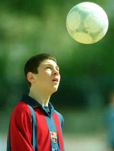
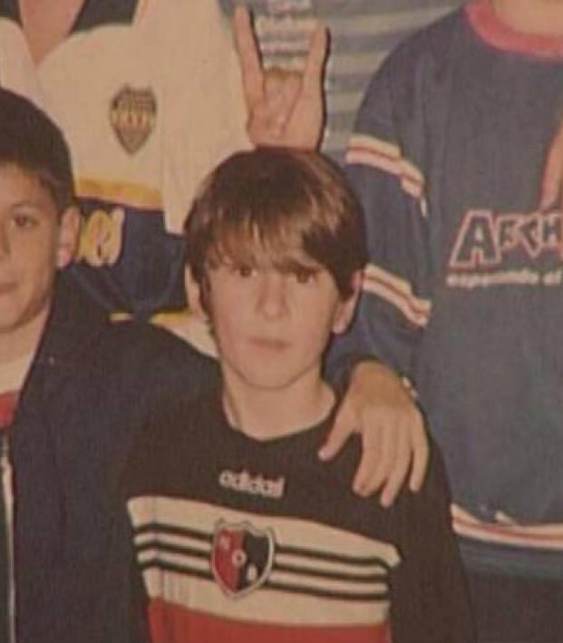
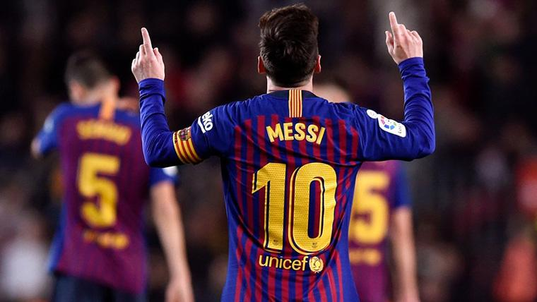
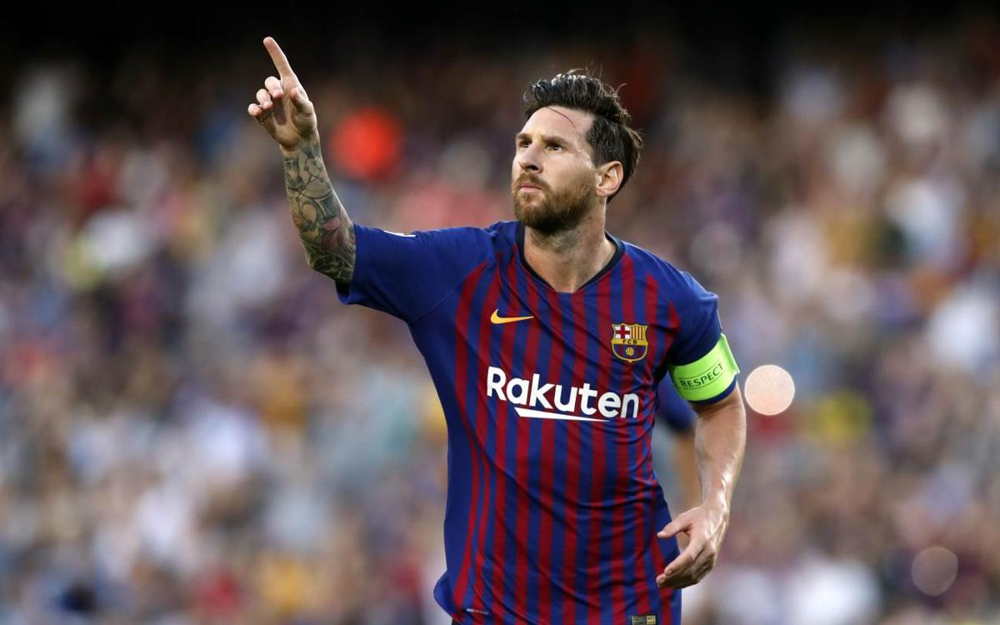
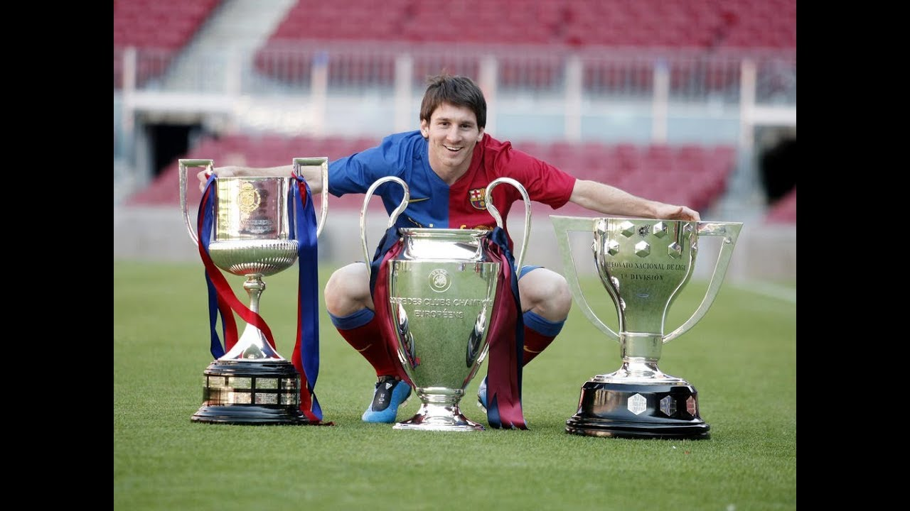
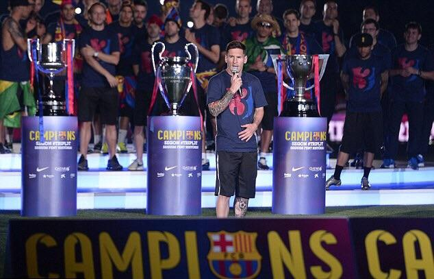
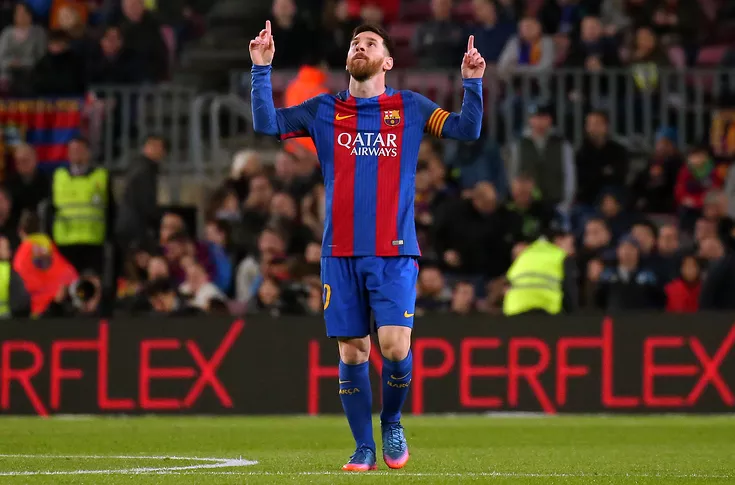
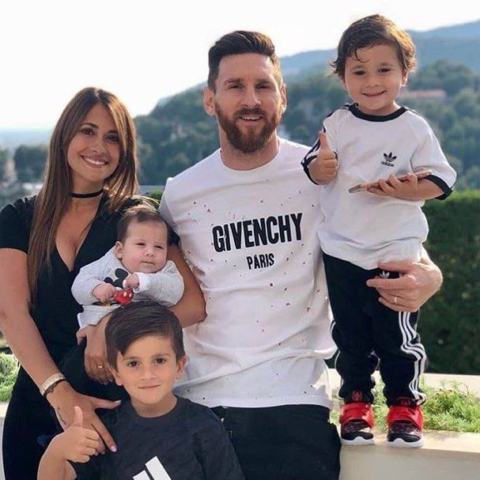
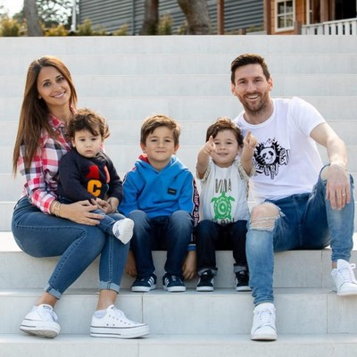

Luis Lionel (“Leo”) Andrés Messi Cuccittini (born 24 June 1987) is an Argentine professional footballer who plays as a forward and captains both Spanish club Barcelona and the Argentina national team. He is often considered the best player in the world and widely regarded as one of the greatest players of all time. At the age of 13, Messi moved from Argentina to Spain after FC Barcelona agreed to pay for his medical treatments.
There he earned renown as one of the greatest players in history, helping his club win more than two dozen league titles and tournaments. In 2012, he set a record for most goals in a calendar year, and in 2019, he was named Europe's Ballon d'Or winner for the sixth time.
Early Life


As a young boy, Messi tagged along when his two older brothers played soccer with their friends, unintimidated by the bigger boys. At the age of 8, he was recruited to join the youth system of Newell's Old Boys, a Rosario-based club.Recognizably smaller than most of the kids in his age group, Messi was eventually diagnosed by doctors as suffering from a hormone deficiency that restricted his growth. Messi's parents, Jorge and Celia, decided on a regimen of nightly growth-hormone injections for their son, though it soon proved impossible to pay several hundred dollars per month for the medication. So, at the age of 13, when Messi was offered the chance to train at soccer powerhouse FC Barcelona's youth academy, La Masia, and have his medical bills covered by the team, Messi's family picked up and moved across the Atlantic to make a new home in Spain. Although he was often homesick in his new country, Messi moved quickly through the junior system ranks.
Lionel Messi's Soccer Career and Teams


FC Barcelona and Argentina
Messi has only played for FC Barcelona, where he first signed at age 13. He also plays for the Argentina national team.
By the age of 16, Messi made his first appearance for the FC Barcelona, putting himself in the record books on May 1, 2005, as the youngest player to ever score a goal for the franchise. That same year, he led Argentina to the title in the under-20 World Cup, scoring on a pair of penalty kicks to propel the team over Nigeria.
Messi steered Barcelona to a wealth of success, most notably in 2009, when the left-footer's team captured the Champions League, La Liga, and Spanish Super Cup titles. That same year, after two consecutive runner-up finishes, he took home his first FIFA "World Player of the Year" honor/Ballon d'Or award.
Even the great Maradona gushed about his fellow countryman. "I see him as very similar to me," the retired player told the BBC. "He's a leader and is offering lessons in beautiful football. He has something different than any other player in the world."
Amazingly, the soccer wizard continued to improve, discovering new ways to elude defenders while leading Barcelona to La Liga and Spanish Super Cup championships in 2010 and 2011, as well as the '11 Champions League title.
Messi embarked on an all-out assault on the record books in 2012. He became the first player to score five goals in a Champions League match in early March, and a few weeks later he surpassed Cesar Rodriguez's club-record 232 goals to become Barcelona's all-time leading scorer.
By the end of 2012, Messi had accumulated an astounding 91 goals in club and international play, eclipsing the 85 netted in a single calendar year by Gerd Muller in 1972. Fittingly, he broke another record when he was named the FIFA Ballon d'Or winner for the fourth time in January 2013.
The soccer great came back to earth somewhat that year due to the persistence of hamstring injuries, but he regained his record-breaking form by becoming the all-time leading scorer in La Liga and Champions League play in late 2014.
After helping Barcelona achieve a historic second treble in 2015, he was honored with his fifth FIFA Ballon d'Or trophy. Four years later, following another La Liga title, Messi again established a new standard for excellence by claiming his sixth Ballon d'Or.
Criticism for Argentina National Team Performance
For all his success with Barcelona, Messi has come under fire for his inability to help Argentina's national team win a major title. He did lead "La Albiceleste" to the final of the 2014 World Cup, and was named player of the tournament, although his team lost to Germany.
In 2016, following Argentina's second consecutive loss to Chile in the final of the Copa America tournament, Messi announced he was ending his run with the national team.
The soccer great eventually reversed his decision, but his participation in the 2018 World Cup did not bring that elusive title, as hoped. After Messi scored an early goal in a 2-1 win over Nigeria that helped his team advance from the group stage, he was largely kept in check by France, his two assists not enough to stave off a 4-3 defeat that sent Argentina packing.
The following year, after Messi heavily criticized the referees in the wake of a 2-0 loss to Brazil in the Copa America semifinals, the Argentine captain was slapped with a three-game ban by the South American Football Confederation.
Lionel Messi Awards
Over the course of his career, Argentine footballer Lionel Messi has received six Ballon d'Or awards, the most for any football player, as well as the 2009 FIFA World Player of the Year and The Best FIFA Football Awards 2019. Widely regarded as one of the greatest players of all time, Messi holds the record for most goals in La Liga (431), the Supercopa de España (13), the UEFA Super Cup (3), as well as the most goals scored in one calendar year, 91 in 2012, and the football player with the most assists in football history, with 281 career assists. He has scored 684 senior career goals for club and country. He is also the first player in history to win five and six European Golden Shoes.
Lionel Messi Awards By Season
Season
Awards
2008-09
Ballon d'Or, European Golden Shoe, , UEFA Champions League Top Scorer, FIFA World Player of the Year, FIFA Club World Cup Golden Ball, La Liga Best Player, La Liga Best Forward
2009-10
Ballon d'Or, UEFA Men's Player of the Year, UEFA Champions League Top Scorer, La Liga Top Scorer, La Liga Best Player, La Liga Best Forward
2010-11
Ballon d'Or, European Golden Shoe, UEFA Champions League Top Scorer, FIFA Club World Cup Golden Ball, La Liga Best Player, La Liga Best Forward
2011-12
Ballon d'Or, European Golden Shoe, UEFA Champions League Top Scorer, La Liga Top Scorer, La Liga Best Player, La Liga Best Forward
2012-13
La Liga Best Player, La Liga Best Forward, La Liga Top Scorer, European Golden Shoe
2013-14
The Guardian Best Footballer In The World, FIFA World Cup Golden Ball
2014-15
Ballon d'Or, UEFA Men's Player of the Year, La Liga Best Player, La Liga Best Forward, UEFA Champions League top scorer
2015-16
La Liga Best Forward
2016-17
European Golden Shoe, La Liga Top Scorer
2017-18
European Golden Shoe, La Liga Top Scorer
2018-19
Ballon d'Or, European Golden Shoe, The Best FIFA Men's Player, Champions League Forward of the Season, UEFA Champions League Top scorer, La Liga Top scorer
Lionel Messi Stats And Titles
Over the years, Lionel Messi has been known and proved himself as a record-breaker by scoring lots of goals as well as being a brilliant assister. He, alongside with his club team FC Barcelona and the Argentina national team, have won many titles over the course of closely 15 years, when Messi was introduced to the football world. Today, he is said to be the best footballer on earth, with the record-breaking six Ballon d'Ors and six Golden Shoes.
To this day, he has won 4 Champions League Titles, 10 La Liga Titles, he has been a winner 6 times of the Spanish Cup. Also, he has won 8 Spanish Super Cups, 3 FIFA Club World Cups, 3 UEFA Supercups and 1 Spanish League Cup with FC Barcelona. His international wins with the Argentinian Football National Team aren't as luscious as his club ones, but he holds One Gold Medal at the 2008/2009 Olympics and he is an Under-20 World Cup Champion.
Up to 27.12.2019, Lionel Messi has banged in 688 goals, provided 282 assists and scored 53 hattricks.


Even now, his FC Barcelona is the only team in the history of football who has won two trebles (2008-09 and 2014-15).
Lionel Messi's Life
Ever since Messi was a child, he has had a tough life. Not only from the physical aspects of life, but with the mental as well. Although he had a turning point at 13 years old, when he moved to Spain to play football for FC Barcelona where most of his physicallity was regained, he was there only with his father, away from most of the family.
The person who he respects the most though, is his grandmother. She is the reason we see him today shining on the football pitch. Without her efforts, Messi wouldn't have been recognised at the local Rosarian football team Newell's Old Boys. Every time Lionel Messi scores a goal, he makes his trademark celebration which is dedicated to his grandmother.

Today, he is enjoying life, with his wife Antonella Rocuzzo and their three children : Thiago, Mateo and Ciro.


Philanthropism
The Little Man has proven himself not only on the pitch, but in the outside world as well. Lionel Messi works with UNICEF in order to improve the childrens' lives who are in need. Also, he has created his own non-profit organisation called "Leo Messi Foundation" which is dedicated to performing acts of solidarity and social commitment.